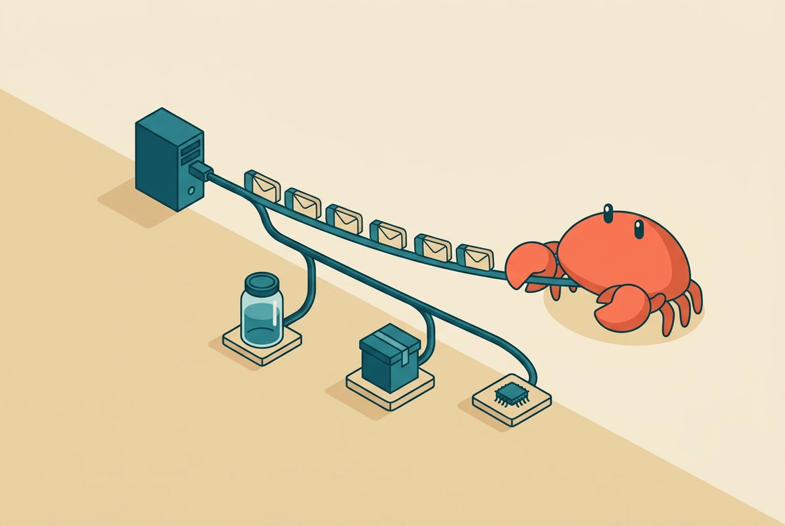

Open-source sandboxing for AI agents.Written in Rust, licensed Apache-2.0.
Give every agent turn a fresh, locked-down sandbox in about 250 ms, then throw it away. The workspace survives every molt. One tiny Rust daemon, crabd, speaks the same protocol on every backend.
Scene: a coral crab sits inside a sealed glass jar. The jar is one sandbox.
A sandbox lives for exactly one turn of your agent. It starts from a pinned template, does the work through crabd, and is destroyed. Whatever it wrote to the workspace is still there for the next turn.
Scene, scrubbed by scrolling: the jar opens and sinks into the sand, the crab works and leaves a teal cube of output behind, then sheds its shell. The empty shell stays as a pale ghost and crumbles to sand. A fresh crab steps out.
1Spawn
Ask for a sandbox from a pinned template (python-dev, ts-dev, render), mount your workspace read-write or read-only, and wait for crabd to say hello.
2Work
The agent calls tools: bash, file_edit, grep. Each call is a frame on the same wire, answered by crabd inside the sandbox.
3Molt
Destroy the sandbox. Processes, scratch files and memory vanish. What was written to the workspace stays, ready for the next turn.
The whole loop, a dozen lines
Rust SDK
Name a backend, create a workspace, spawn a sandbox with it mounted, run a command, throw the sandbox away. The file stays.
Scene: beside the crab, labelled blocks stack up as the code reads: builder, workspace, spawn, bash. On destroy, the spawn and bash blocks vanish and a file card is left on the workspace block.
main.rs
use sandcrab_sdk::{DockerConfig, MountMode, SandboxConfig, Sandcrab};
#[tokio::main]
asyncfn main() -> sandcrab_sdk::Result<()> {
let crab = Sandcrab::builder()
.docker(DockerConfig::default())
.templates_dir("templates")
.build()?;
crab.workspaces().create("project")?; // outlives every sandboxlet config = SandboxConfig::from_template("base")
.mount("project", "/workspace", MountMode::ReadWrite);
let sandbox = crab.spawn(config).await?;
let out = sandbox.bash("echo 42 | tee answer.txt").await?;
println!("{}", out.stdout);
sandbox.destroy().await?; // answer.txt stays in the workspaceOk(())
}
Measured, not promised
Docker backend, 2-vCPU VPS, n=30
Every number below comes from one canonical benchmark run, kept in the repo with its raw JSON. Firecracker has no numbers yet: its benchmark waits for a KVM host.
~250msSpawn to ready, p50227–258 ms across templates
~100msTeardownuntil the sandbox is verified gone
~3.7msFirst tool callround trip after hello
16Native toolswritten in Rust, inside crabd
The sandbox goes. The files stay.
Persistent workspaces
Compute is disposable. Files are not. A workspace is durable storage that lives apart from compute: a directory you already have, or one Sandcrab manages for you. Sandboxes mount it, change it, and disappear. Nothing runs while it waits, so an idle workspace costs nothing.
Scene: the crab stands on a cutaway burrow. Crates and pebbles in the chamber below stay put while pale shells appear on the surface and fade away again.
The host can reach in between turns. Put, read or delete files while no sandbox is running: drop in an attachment, collect an output.
Read-only window, read-write door. Each mount is ReadOnly or ReadWrite, enforced by the kernel. One writer at a time.
Swap the shell, keep the burrow. Turn one in python-dev, turn two in render, same workspace.
Built for hostile files. Host-side file operations are fd-relative and refuse symlink escapes, because a workspace is attacker-controlled.
Molting
The shell is the sandbox. The cube is the work you keep.
Window and door
Read-only mounts let you look. Read-write mounts let you change things.
Switch shells, same burrow
Templates are swappable. The workspace is the constant.
Pick your shell: fast container or sealed microVM
Backends
Backends plug in behind one trait and report what they actually isolate. You choose explicitly. Sandcrab never moves you from a jar to a tide pool behind your back.
Scene: the crab stands between two shells. On one side an open glass jar on a shared shore, where two grey crabs already live: the container. On the other a sealed glass sphere with its own teal core: the microVM. The crab looks from one to the other.
Running your own agentsDocker
Running strangers’ codeFirecracker
Sealed jar or tide pool
A microVM gives each sandbox its own kernel. A container shares the host’s.
Production
Docker
Shared kernel, for single-tenant and trusted hosts
Officially supported and hardened: all capabilities dropped, no-new-privileges, pinned images, loopback-only ports. Spawn to ready in about 230–260 ms, teardown in about 100 ms. It shares the host kernel, so it is not hardware isolation: use it for your own agents and trusted workloads, not strangers’ code.
Explicit selection only: you name the backend, every time
All capabilities dropped, no-new-privileges, never privileged
Network off by default; PID, memory and CPU limits; no swap
Runs as your uid, so workspace files stay editable on the host
Template image must match its pinned SHA-256
Built, KVM tests pending
Firecracker microVMs
Own kernel behind KVM, hardware isolation
Its own kernel per sandbox, for hostile multi-tenant code. Built and tested against a fake VMM; real-KVM end-to-end tests and benchmarks are pending, so no numbers yet.
Same crabd, same frames, same tools
Workspaces become block drives, synced back at teardown
Hostile archives are rejected on the way out
Jailer confinement for multi-tenant hosts is still to land
Planned: Cloud Hypervisor, libkrun.
Capability
Docker
Firecracker
Status
Production-ready
Built, KVM tests pending
Hardware isolated
No, shares the host kernel
Yes, own kernel
Multi-tenant safe
No
Not yet
Host-directory mounts
Live bind mount
Copy in, sync back
Network policies
Off or unrestricted. Anything stricter is refused at spawn, never faked.
All sixteen live inside crabd. File and search tools are native Rust (ignore, globset, grep-searcher), not shell-outs to sed and find. Their schemas are generated from the protocol crate, so they reach your model as they are. Recoverable failures come back as JSON for the model to read; fatal ones stay a Rust error.
Scene: the crab buckles on a belt of small tool cards and holds one card up in its claw. As you scroll, the card flips through bash, file_read, file_edit, grep, glob and list_dir.
Every bash call has a timeout. When it expires, crabd signals the entire process group, so forked children don’t outlive the call. Sandboxes also carry a TTL.
Output is bounded
A runaway log can’t flood the context window. crabd keeps a capped head and tail (32 KiB per stream by default), drops the middle and tells the model it did.
One wire, every backend
One guest protocol
A static, musl-linked daemon called crabd runs inside every sandbox. The host always talks to it the same way: a 4-byte big-endian length, then a JSON-RPC 2.0 message whose method is the tool name.
The transport changes with the backend. The bytes don’t. What you test on a laptop is what runs on your servers, and nothing reaches for docker exec.
Scene: a host server and the crab are joined by a single cable on the sand. Request cards travel out to the crab and teal result cubes travel back.
One frame for bash("ls"), for illustration. Empty frames and frames over 16 MiB are rejected before anything is allocated.

The agent that built this page
crabagent
It wrote this page from inside a Sandcrab sandbox. crabagent is a small coding agent, Claude working inside a sandbox, whose tools are exactly Sandcrab’s tools. Every bash, file_edit and grep it issues runs in the sandbox, never on your machine. The API key stays on the host.
Scene: the crab builds a small sandcastle block by block, finishing with a paper page on its front and a flag on top.
Name a persistent workspace with -w, or mount a host directory with --mount-host
An interactive REPL by default, or one task to completion with -p
Uses the ts-dev template unless you pick another with -t
Tested against a scripted fake model, so the loop is verified without an API key
Illustrative session; the real output is more verbose.
Your shore, your rules. Apache-2.0.
Quickstart
Sandcrab is a Rust workspace you build and host on your own machines. State lives in a directory you own: ~/.sandcrab, or $SANDCRAB_HOME. You need Rust with the musl target and Docker.
Scene: the crab rests on an open shore by the water, waving a claw.
shell
# get the code and build the CLI
git clone https://github.com/polvera-org/sandcrab
cd sandcrab
cargo build --release -p sandcrab-cli
export PATH="$PWD/target/release:$PATH"
# the static musl crabd that runs in every sandbox
scripts/build-crabd.sh
# build the templates and pin their image IDs
templates/build.sh --pin
# pick the backend once, then check the host
export SANDCRAB_BACKEND=docker
sandcrab doctor
# a workspace with one file in it
sandcrab workspace create demo
echo 'print("hello from the host")' | sandcrab workspace put demo hello.py -
# run it in a throwaway sandbox
sandcrab run -t python-dev -m demo:/workspace -- 'python3 hello.py'
Apache-2.0
Use it, fork it, ship it.
Self-hosted
Docker on your hosts today; Firecracker microVMs on your KVM hosts once validated.
Pinned templates
A Dockerfile and a manifest, with the image checked against its SHA-256.
Open about limits
Known gaps and deferred work are listed in the repo.
Not yet
Egress allowlist. Network is off or unrestricted, nothing in between.
Snapshots. Every sandbox starts fresh from its template.
MCP. No MCP server yet; tools come through the SDK and the CLI.